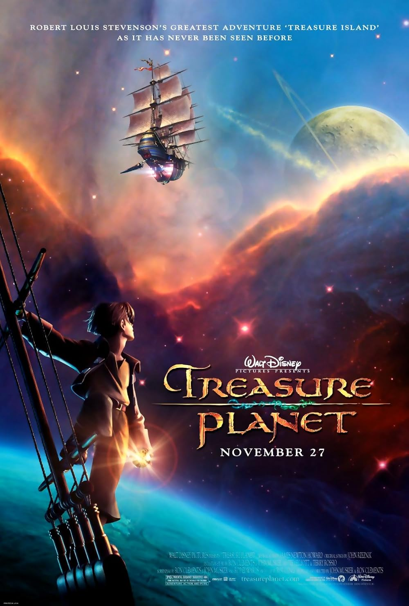

Treasure Planet (2002) is an underrated, hidden gem of an animated movie. You can watch the trailer here.
This is the movie synopsis by Rotten Tomatoes:
The legendary "loot of a thousand worlds" inspires an intergalactic treasure hunt when 15-year-old Jim Hawkins stumbles upon a map to the greatest pirate trove in the universe in Walt Disney Pictures' thrilling animated space adventure, "Treasure Planet." Based on one of the greatest adventure stories ever told - Robert Louis Stevenson's "Treasure Island" - this film follows Jim's fantastic journey across a parallel universe as a cabin boy aboard a glittering space galleon.
It's one of those movies that is rather unknown because it did poorly on release. But for anyone who does know about it though? You better believe that they we absolutely adore it and will talk highly about it whenever possible.
There's a lot of things I love about this movie, but here are a few:
Needless to say, I highly recommend giving Treasure Planet (2002) a watch.
While we're here, give this song cover by Lumie in YouTube a listen, too. It's an extended cinematic version of "Jinu's Lament" from Kpop Demon Hunters (2025). She has an incredible and powerful voice that I think more people should hear.